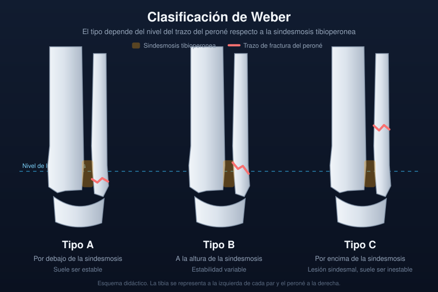

Ficha del catálogo
Fractura de tobillo y clasificación de Weber
- Sistema
- Óseo
- Modalidad
- RX
- Región
- Tobillo
- Dificultad
- Intermedio
Las fracturas del tobillo se producen por mecanismos de inversión o eversión con el pie apoyado y comprometen el anillo formado por tibia, peroné y ligamentos. Lo decisivo no es solo el trazo óseo sino la estabilidad de la mortaja tibioperonea. Una fractura estable se trata de forma conservadora, mientras que la inestable requiere fijación.
Técnica
Proyecciones anteroposterior, lateral y de mortaja con quince a veinte grados de rotación interna, que despliega el espacio articular de forma uniforme.
Qué observar
- Altura del trazo peroneo respecto a la sindesmosis tibioperonea
- Espacio claro medial: Si supera el grosor del espacio superior sugiere lesión del ligamento deltoideo
- Congruencia de la mortaja, con espacio articular simétrico en todo su contorno
- Fractura del maléolo medial o del margen posterior de la tibia
- Diástasis tibioperonea con solapamiento reducido en la proyección frontal
- Fractura proximal del peroné, que indica lesión por rotación externa alta
Hallazgos
Trazo de fractura maleolar con grado variable de desplazamiento y posible pérdida de la congruencia de la mortaja tibioastragalina.
Perlas
Si hay fractura maleolar medial o ensanchamiento del espacio claro medial sin fractura peronea visible, hay que radiografiar toda la pierna: Puede existir una fractura alta del peroné con lesión completa de la sindesmosis.
Diagnóstico diferencial
- Esguince de tobillo
- Solo edema de partes blandas laterales, sin trazo ni asimetría de la mortaja.
- Fractura de la base del quinto metatarsiano
- Dolor y trazo en el pie, no en el maléolo.
- Fractura osteocondral del astrágalo
- Defecto en la superficie articular del domo astragalino.
Simuladores
- Núcleos de osificación accesorios en niños
- Os trigonum posterior
- Fisis abiertas en el paciente pediátrico
Por modalidad
- RX
- Estudio inicial y de control
- TC
- Fracturas conminutas, afectación del pilón tibial y planificación quirúrgica
- RM
- Lesiones ligamentarias, osteocondrales y edema óseo
Protocolo
Tres proyecciones estándar. Añadir radiografía de pierna completa si se sospecha lesión sindesmótica alta y tomografía si hay afectación articular compleja.
Clasificación
La clasificación de Weber ordena las fracturas del peroné según la altura del trazo respecto a la sindesmosis: Por debajo, a su nivel o por encima. Cuanto más alto es el trazo, mayor la probabilidad de inestabilidad.
Errores frecuentes
- No pedir la proyección de mortaja y sobrestimar la congruencia articular
- Ignorar el ensanchamiento del espacio claro medial en ausencia de fractura medial
- Confundir fisis o huesos accesorios con trazos de fractura

tobillo weber maleolo sindesmosis mortaja fractura inestabilidad